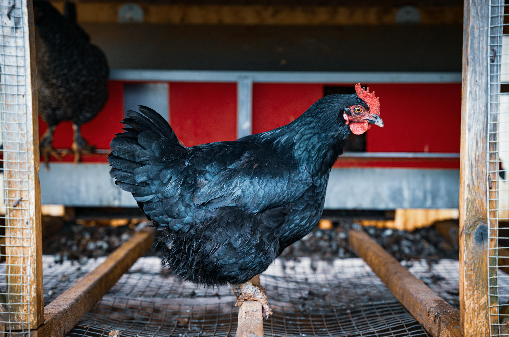

Once you figure out the style of keeping your chicken it is time to design your coop. This is where you start to make hard plans on how you want this hobby to start and grow. You can buy predesigned kits, but if you are a little more hands on you can build your own. There are a couple of concepts to keep in mind. Number of chicken you think you might want to keep. Ventilation of the coop. How much time you want to spend cleaning the coop.
You would think the size of the coop would be where you start to determine the number of chickens you could hold but it is actually the rails. The rails are the poles your chicken will sleep on at night. An ideal pole cross-section is one inch high and two inches wide. They have eased edges. So the edges are curved. Top is flat because the chickens feet do better with flat surfaces so you would not want to use a wooden clothes pole. The length you want is determined by the max number of chickens you would like to keep. Since they are pets figure one foot a chicken. The reason is the animal’s comfort. If you were doing it on industrial standard you base it on eight inches for a small bird or ten inches for larger birds. So if you want to keep 10 birds you would want 10 feet of rail space. You can divide that by whatever you chose, you could do two poles five feet long. You will get the dimension of your coop off of your poles you want them a foot and a half away from each other and the walls. So two five foot poles would give you close to a five foot by five and a half feet floor plan
The height of the coop would be determined more buy your ventilation. Than anything else. You can raise your poles so that will have a little play on your height. But your ventilation is much more important. Chickens are insulated buy their feather so the coop structure is more about keeping water off than keeping them warm. You do not want massive window during the winter but you do need good ventilation to keep the flock healthy. Stuffy air can make the chicken sick in an ideal design you will have thin high windows that can be pulled out and a cupola to let the air naturally flow.
The height of the coop would be determined more buy your ventilation. Than anything else. You can raise your poles so that will have a little play on your height. But your ventilation is much more important. Chickens are insulated buy their feather so the coop structure is more about keeping water off than keeping them warm. You do not want massive window during the winter but you do need good ventilation to keep the flock healthy. Stuffy air can make the chicken sick in an ideal design you will have thin high windows that can be pulled out and a cupola to let the air naturally flow.
The last major thing you want to consider is how much time and effort you want to spend cleaning your coop. Chickens, like all birds, are fairly clean animals in the wild. Pinned up they can be nasty. You can just have a floor with some pine shavings and you will have to clean the coop frequently. The poop absorbs into the pine shavings and start smelling pretty quickly. So a Deep litter method is considered an good alternative. The system is pretty easy. You give yourself about a foot of depth for the floor. It is recommended that you use hemp bedding. The process is very simple you add the bedding to the floor. As it breaks down the feces you add more. When it does start to either smell or get saturated you clean it out. The reason you use hemp bedding is does a better job of absorbing orders and breaking down the feces. If you use hemp it will take about six months to a year before you have to clean out the bedding. Once you do clean it out you can use the bedding as fertilizer for your trees, you can also add food scraps and give it a few more months and it will break down into a potting soil. Either uses would help offset the cost of the hemp bedding.
First Page